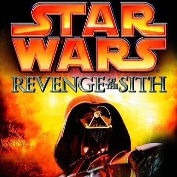

The Jedi Archivist
¿Que es?
The Jedi Archivist es un blog dedicado a compartir información y opiniones de Star Wars, y su universo expandido antes de su adquisición por Disney, actualmente conocido como Star Wars Legends, que incluye series animadas, libros, comics, video juegos, y otras historias.
Articulos recientes
Que es Star Wars Legends?
Se le denomina Star Wars Legends al conjunto de libros, juegos, historias cortas, y contenido adicional que contaban historias conectadas a las peliculas principales de Star Wars. Anteriormente conocido como el Universo Expandido, estas historias tenian como objetivo darle mas contexto a las peliculas, y contar muchas historias más con sus personajes conectadas entre si. En legends, se contaron muchas historias que los fans de Star Wars consideran iconicas, e introdujeron personajes que hoy en dia son muy amados por la comunidad, tales como Mara Jade, la asesina del emperador que eventualmente se convirtio en la esposa de Luke Skywalker...leer mas

La novelización que La Venganza de los Sith... ¿Mejor que la pelicula?
La novelización de La Venganza de los Sith, escrita por Matthew Stover usando el guíon de la pelicula, va mas alla de ser una simple adaptación. Explora más afondo los personaje Anakin Skywalker, sus motivaciones de salvar la vida de su esposa al caer al lado oscuro, y su frustración al no recibir las respuestas que busca del consejo jedi. A su vez, muestra la diferencia entre las mentalidades de Anakin, quien siente la necesidad de controlar todo, sin poder dejar ir nada, a la de Obi Wan, un personaje cuya fuerza viene de que esta preparado para dejar ir todo y cumplir con su responsabilidad como caballero jedi, y como la amistad de este duo inseparable poco a poco se quebranta...leer mas
The New Jedi Order, la culminación del universo expandido
The New Jedi Order es un proyecto de publicación que incluye 19 libros principales, junto con comics, y historias cortas, que en conjunto cuentan un arco narrativo que toma lugar 25 años despues del Retorno del Jedi, de la invasión de los yuuzhan vong, una raza alienijena ajena a la galaxia, con el objetivo de conquistarla. Esta historia pone a la nueva orden jedi, fundada por Luke Skywalker, y los obliga a cuestionar su rol y responsabilidad en la galaxia. A su vez, esta guerra une a toda la galaxia y a personajes de una variedad de facciones del universo expandido hasta ese momento, desde la nueva republica, hasta el remanente imperial, con el objetivo de repeler a esta fuerza invasora...leer mas
Eras de la galaxia
El universo expandido de Star Wars esta dividido en un numero de eras que narran historias en ciertos periodos de tiempo en la historia de la galaxia. Explora articulos referentes a cada era
Era pre-república
En esta era de la galaxia, se dan los inicios de las 2 facciones principales, la orden jedi, conocida como los je'daii y la republica, y se ve estas instituciones en sus formas más primitivas
Era de la antigua republica
En esta era, se ve como la orden je'daii se separa en 2 grupos, los jedi y los sith. Se ve los numerosos conflictos entre los 2 hasta la derrota del ultimo grupo sith, conocido como la hermandad de la oscuridad. También narra los conflictos entre los jedi y los mandalorianos
Era del alzamiento del imperio
Los sith, considerados extintos, y operan en las sombras para orquestrar al caida de los jedi y la republica. Todo cambia cuando los jedi descubren a Anakin Skywalker, el elegido de la fuerza, cuyo deber era destruir a los sith. Eventualmente, Anakin se convierte en Darth Vader, la republica se convierte en el imperio, y los jedi son eliminados.
Era de la rebelión
En esta era, se forma una alianza rebelde para enfrentar al imperio, y Luke Skywalker, quien es el hijo de Anakin Skywalker, comienza su aventura para convertirse en un caballero jedi, y se vuelve un heroe para la galaxia
Era de la nueva republica
Luego de la destrucción de la segunda estrella de la muerte y la muerte del emperador, la rebelión se vuelve la nueva republica, quienes enfrentan a un debilitado remanente imperial, y adquieren el control de la mayoria de la galaxia.
Era de la nueva orden jedi
En esta era, se ven historias de la nueva orden jedi formada por Luke Skywalker, enfrentandose a nuevas amenazas. Se enfoca en las historias tanto de los heroes originales como de sus hijos